Synthesthetic transforms your music into a visual experience.
This multitrack groovebox features:
- 4 tracks (3 synths + 1 drum machine)
- 10+ synth engines
- 150+ sounds
- 30+ drum kits
- 30 audio-reactive visualizers.
Visualizers render on the FM-1 screen and over USB as a webcam for OBS, Zoom, or Photo Booth.
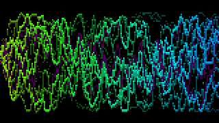
01 WAVE
the mix's waveform, left and right, standing still
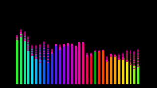
02 BARS
32 bands, a quarter octave each from 40 Hz to 10 kHz, in decibels, with falling caps
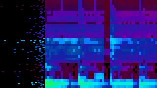
03 HEAT
the spectrum scrolling by, cold to hot
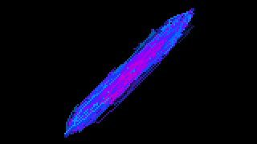
04 XY
left against right: the stereo image
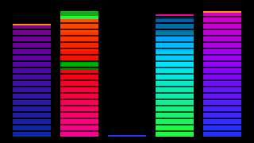
05 METERS
tracks 1 to 4 and the mix in decibels, with peak holds
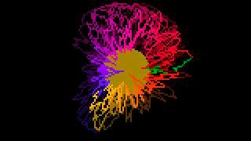
06 RING
the wave round a ring, around a disc that swells with the bass
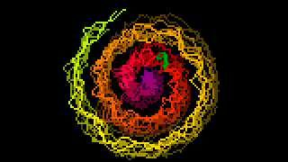
07 SPIRAL
the wave along a spiral from the centre
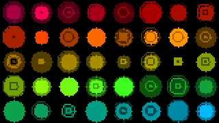
08 GRID
forty circles, each a point of the wave
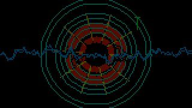
09 KIT
the drums, each its own shape: the kick a disc that pops, the snare a star, the clap a scatter of blocks, the closed hat a tick, the open hat a ring that opens, a tom a triangle (low on the left, high on the right), the crash a wide ring with sparks, the ride a small ring, percussion a diamond
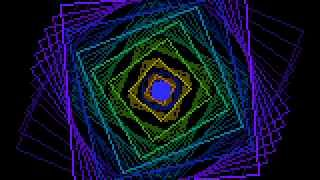
10 TUNNEL
squares receding, pumped by the mix and the kick
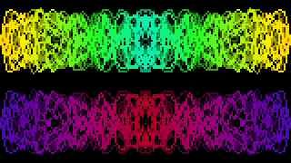
11 MIRROR
the waves mirrored four ways
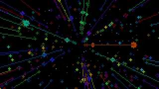
12 STARS
a starfield flying at you, the bass on the throttle
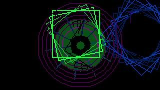
13 SQUARES
a square for every synth note, in its track's colour, and the drums as in KIT
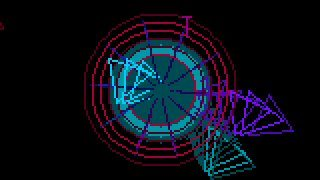
14 SHARDS
triangles flung out by the synth notes, and the drums as in KIT
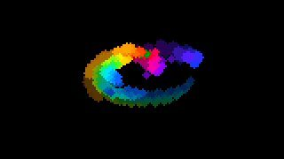
15 ORBITS
a dot per band, each on its own orbit
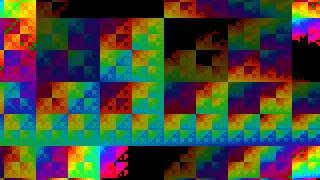
16 MOIRE
an XOR moiré that races with the level
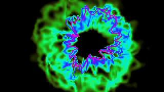
17 WARP
the classic feedback: the picture zooms and turns, the wave round a ring feeds it, the kick pushes it
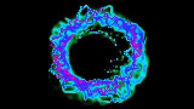
18 VORTEX
a whirlpool, strongest at the centre, with the bands as sparks
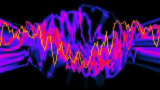
19 RIPPLE
rings of zoom running out from the centre, the wave across them
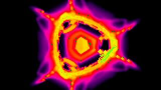
20 KALEIDO
the picture folded into 4, 6 or 8 mirrored wedges, turning
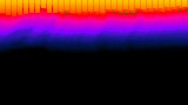
21 MELT
everything drips down, wobbling, fed by the spectrum along the top
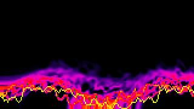
22 SMOKE
everything rises and curls, the wave along the bottom the fire under it
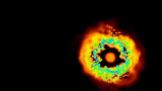
23 WORMHOLE
a wandering hole pulling the picture round and in
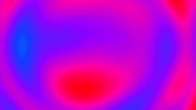
24 PLASMA
four waves added together, the colours cycling through them
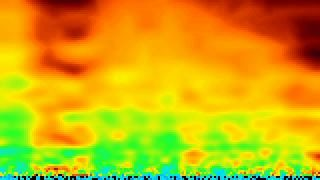
25 FIRE
heat rising from the bottom, fed by the bands, flaring on the kick
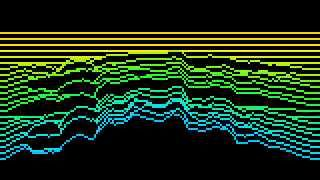
26 RIDGES
the last seconds of the spectrum as a mountain range
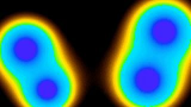
27 LAVA
four blobs that swell with their bands and melt into each other
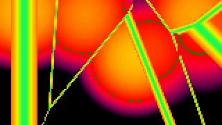
28 CELLS
cells round eight drifting seeds, with bright edges, shaken by the kick
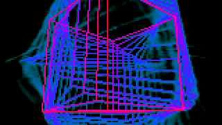
29 WIREFRAME
a cube, an octahedron, an icosahedron or a tesseract turning, its trails behind it
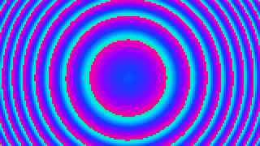
30 FRESNEL
two zone plates wandering through each other
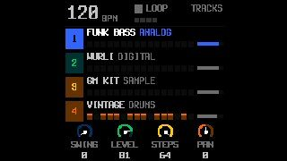
31 SCREEN
not a picture: the FM-1's own display, to stream your workflow